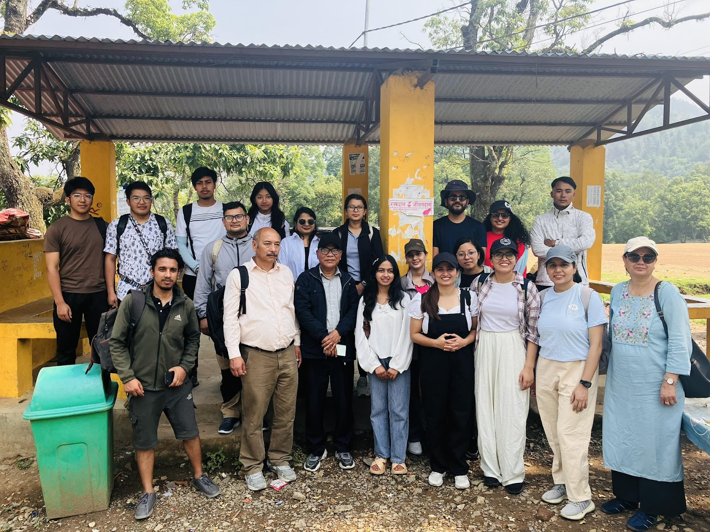
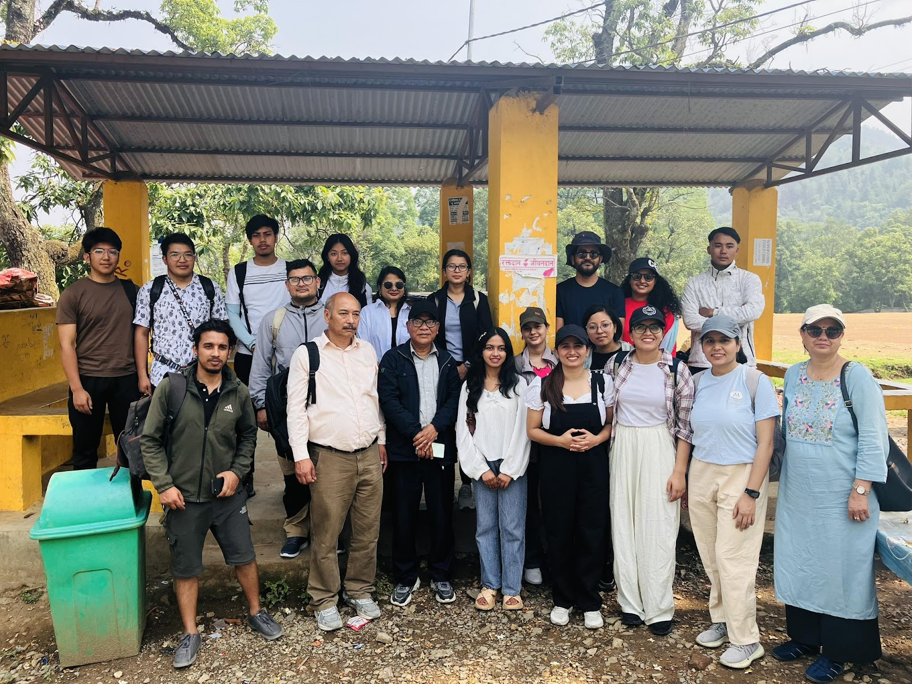

Expedition Overview
Green Impact Nepal organized an educational eco-hike to Marble Dada, combining outdoor adventure with environmental learning to explore conservation efforts and environmental restoration initiatives in this unique landscape. This expedition provided participants with hands-on experience in understanding ecosystem dynamics and conservation challenges.
Marble Dada, with its distinctive geological features and diverse ecosystems, serves as an excellent natural laboratory for studying environmental processes, biodiversity conservation, and the impacts of human activities on natural landscapes. The eco-hike was designed to foster a deeper connection between participants and the natural environment while promoting sustainable tourism practices.
Educational Components
Throughout the hike, participants engaged in various educational activities including field-based learning sessions on local flora and fauna, geological observations, and discussions about conservation strategies. Expert guides provided insights into ecosystem restoration techniques, sustainable land management practices, and the importance of preserving natural habitats.
The expedition also included practical conservation activities such as trail maintenance, waste cleanup, and native plant identification. Participants learned about the principles of Leave No Trace ethics and how to minimize environmental impact while enjoying outdoor activities, emphasizing the role of responsible eco-tourism in conservation efforts.
Key Learning Outcomes
Environmental Education
- Ecosystem restoration techniques
- Biodiversity conservation methods
- Geological formation studies
Sustainable Practices
- Leave No Trace principles
- Responsible eco-tourism
- Environmental stewardship
Conservation Impact
The eco-hike to Marble Dada successfully demonstrated how outdoor education and eco-tourism can serve as powerful tools for environmental conservation and awareness. Participants gained practical knowledge about ecosystem management, developed a stronger appreciation for natural landscapes, and became advocates for conservation in their communities. This program exemplifies Green Impact Nepal's commitment to combining adventure with education to create meaningful environmental impact and inspire the next generation of conservation leaders.